GLAM ROCK HITS THE U.K. (1970S)
If only emo had some kind of historical antecedent that could give us insight into what happens when queer, feminine, and androgynous tastes clash with their masculine contemporaries. Maybe even a music subculture. A rock culture. A queer-feminine rock culture whose success also hinged upon the emerging media technologies of its time. Wait a second.
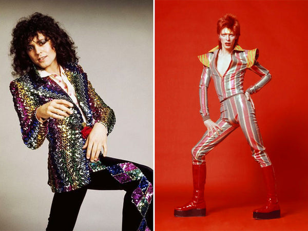
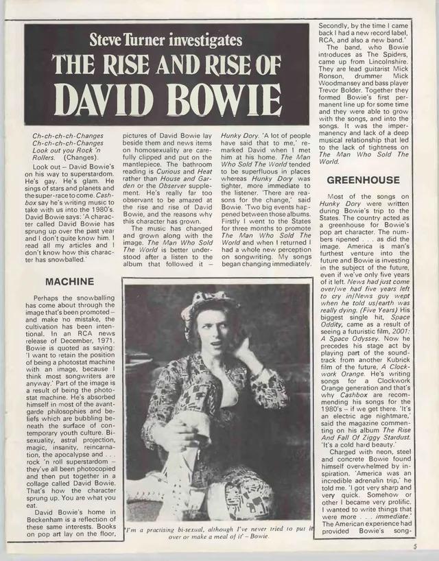
This has all happened before.
Glam rock ruled 1970s Britain. If punk represented the decade’s edgy underground, glam was its glittery, transgressive cousin dominating the airwaves and rocketing to mainstream success via the color television. Glam theorist Jon Stratton emphasizes the way that the rise of glam intertwined with the increased accessibility of color television, which broadcast the shimmery world of glam rock into households across the country. He says that rather than a “subculture” (as defined by earlier British youth theorists), glam rock audiences are better understood as fans. This might seem like an obvious observation to modern audiences, but the distinction here is important. In contrast to subcultures like punk which attempted to separate themselves from mainstream British society, glam sought to operate from within the mainstream, challenging British propriety from as large a platform as possible. This meant that glam spectatorship largely hinged upon the consumption of mainstream media (TV, magazines, etc.) in a way that other subcultures didn’t.
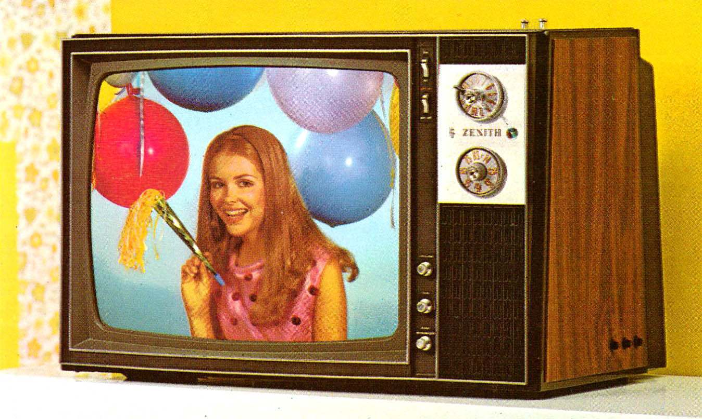
The importance of the color television and mass media on glam rock is one way that we can see glam as a product of post-war British consumer culture. Color TV hit Britain later than America, and the novelty of the technology further exacerbated the spectacle of glam rock artists.1 The other way that we can connect glam to consumerism is through its enthusiastic embrace of fashion. Glam rock acts like David Bowie, Marc Bolan, and Roxy Music adorned themselves with makeup, glitter, feather boas, platform shoes, and outrageous costumes to craft their larger-than-life personas. For fans, replicating this style usually meant purchasing mass-produced consumer fashion and makeup products in addition to vintage pieces and boutique items. Therefore, as Stratton argues, glam audiences organize around shared consumption habits—of the mass media, of fashion products, and of idols themselves.
By curating alien, larger-than-life stage personas, glam artists emphasized the separation between performer and audience in a way that rejected typical rock sensibilities of the time. The success of 60s rock scenes (garage, psychedelic, progressive) largely hinged upon the relatability, or perceived relatability, of its performers. These predominantly male artists dressed in street clothes, leaned into their cultural roots, and emphasized musical virtuosity over style. In contrast, glam idols costumed themselves heavily, adopted new names and identities, and leaned into the fun of simple, danceable guitar riffs. As glam scholar Philip Auslander argues, “if psychedelic rock was suspicious of spectacle and theatricality, glam rock celebrated these aspects of performance.”2 Stratton takes this a step further to argue that not only did glam celebrate its own theatricality, it leaned into spectacle as a way to highlight the constructed nature of all performance in the age of the color television.3 Masculinized rock subcultures like those of the 60s are often allergic to artifice. They say that performance is deceptive, and deception is morally wrong, so performance must be obscured by a claim to relatability between performer and audience. For glam rockers, artifice was a legitimate form of the real, and fantasy could be more real than reality itself. Glam said that everything is a spectacle, so we might as well lean into it.
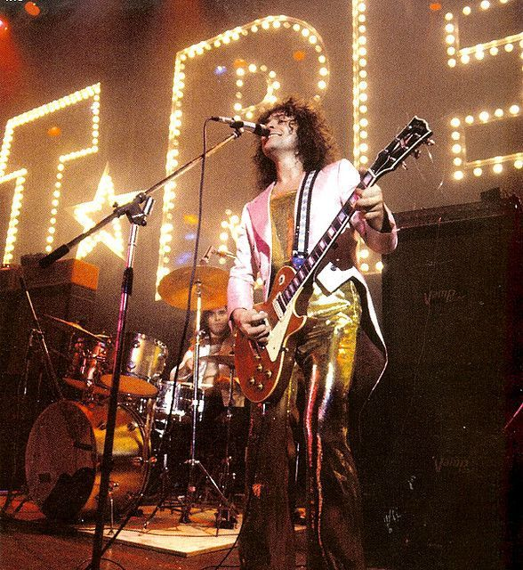
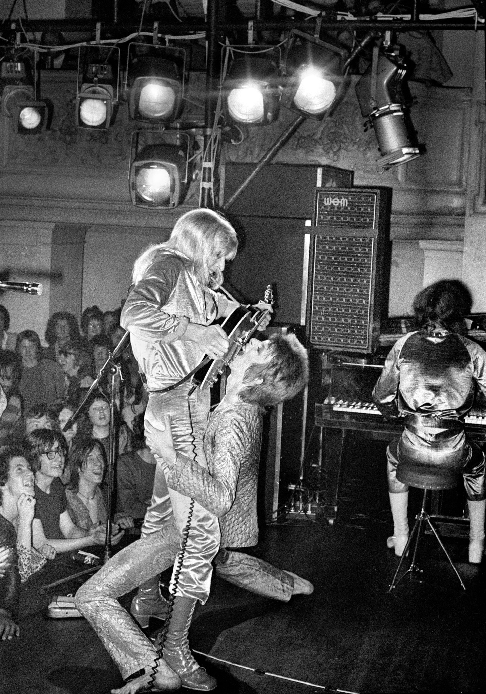
This is also where we start to explicitly get into the gender politics at play in glam rock. Before we move into glam’s reliance on androgynous aesthetics, it’s important to spell out the way that glam’s embrace of artifice and the mainstream feminized it in comparison to its masculine rock counterparts. The masculine rock culture of the time revolved around a version of authenticity, and glam represented a perversion of that authenticity through its embrace of feminine aesthetics and queer values. Feminine excess was interpreted in these spaces as performativity, which in turn became the measure of an artist’s artificiality or insincerity toward their audience. 60s rock, with its bias toward masculine realness, couldn’t conceive of how glam’s irony, feminine performativity, and embrace of spectacle might be a vehicle for truth.
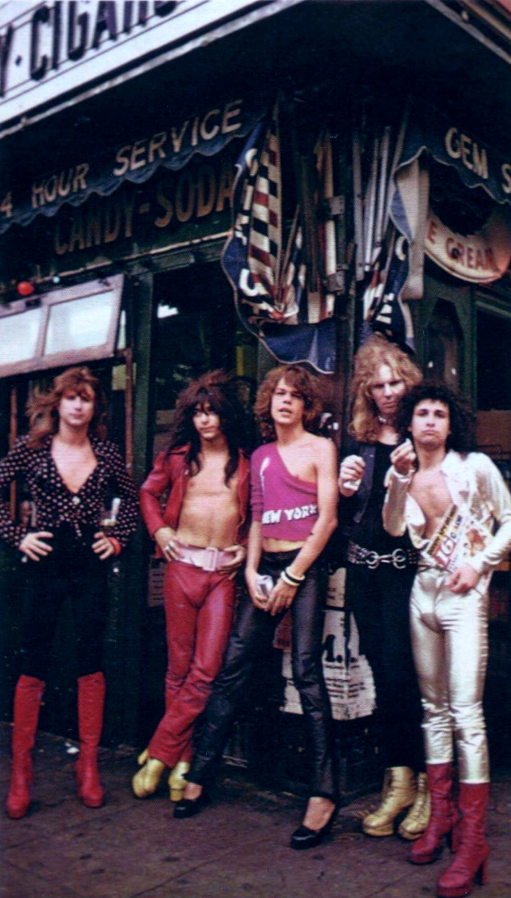
When we talk about androgyny in subcultures like punk, we’re often talking about spaces where women adopt masculine aesthetics as opposed to the other way around. In contrast, glam artists were primarily men who adopted feminine aesthetics, adorning themselves with glitter, feathers, platform heels, and women’s clothing. Their audiences were dominated by young women and feminine men who eagerly adopted the look of their androgynous idols. The privileging of the feminine in glam rock, along with its widespread media coverage, made it more accessible to these audiences who had a harder time participating in insular, masculine-biased subcultures like punk.
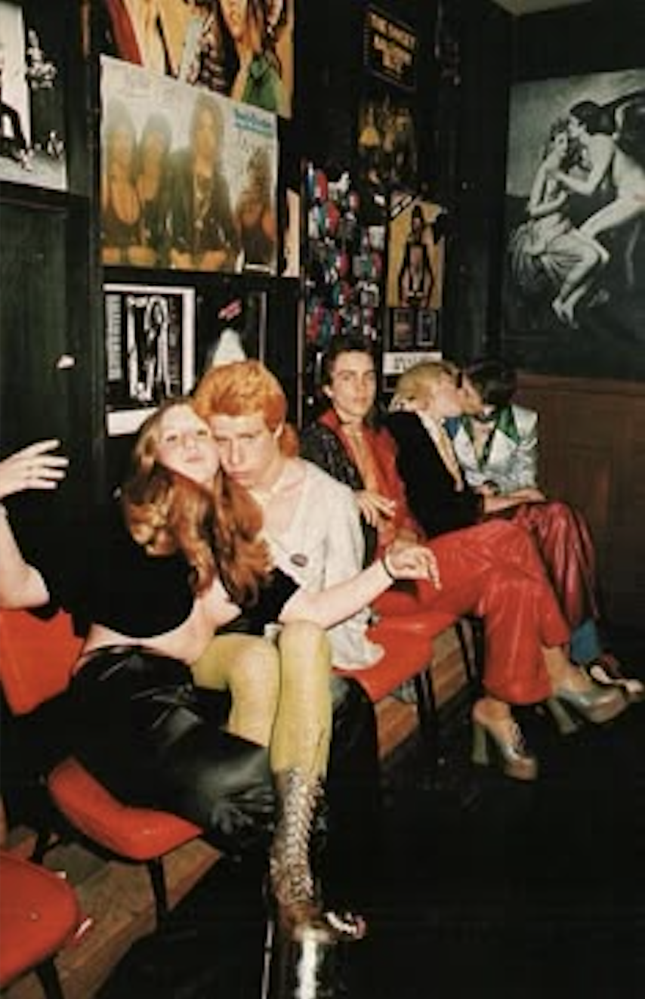
Many of these artists also curated public personas that suggested they might be bisexual or gay, like David Bowie who repeatedly gave reporters conflicting accounts of his own sexuality. These sexual provocations were part political, part self-expression, and partly just for the fun of riling people up. He also made a point to broadcast these moments as widely as possible, as during his notorious 1972 performance on the BBC’s Top of the Pops where he erotically draped an arm around guitarist Mick Ronson during his set. This simple moment set the country aflame, but perhaps its biggest impact was felt in the lives of all the young queer people who had tuned in to watch their idol perform on a national stage. Philip Hoare recounts his experience witnessing this moment as a fourteen year old in his parents’ living room: “David Bowie appeared on Top of the Pops with Mick Ronson and I remember thinking: ‘What universe is that happening in?’”
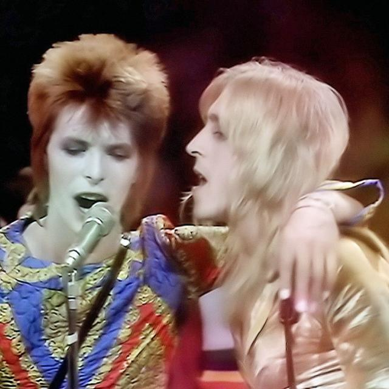
Hoare’s statement here gets at another crucial dimension to glam rock, which is that glam is about the curation of fantasy. Onstage and onscreen, performers like Bowie and Bolan constructed intricate fantasy worlds where idols and audience members alike could become their real selves. For young queer people living in 70s Britain, conceptual spaces like Bowie’s “Ziggy Stardust” persona were glittery refuges for them to express themselves authentically through the adoption of feminine aesthetics. The allure of these worlds, combined with the allure of their maybe-bisexual creators, produced an environment that was, first and foremost, about queer desire. But not just any type of desire—desire specifically for the androgynous man.
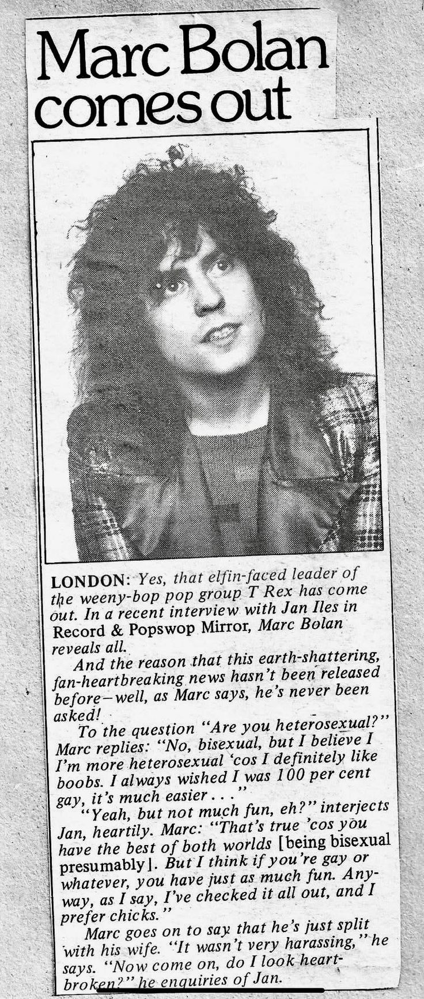
As Stratton points out, “glam was centered on the problematic of the male performer as spectacle.”4 In contrast to earlier rock cultures, where male performers downplayed their own spectacularity, glam idols presented themselves as dazzling sexual objects to be consumed. By enthusiastically placing themselves in the passive position traditionally occupied by women in visual culture5, they threatened the assumed agency of the male rock performer. They also put male viewers in a potentially uncomfortable position to be seduced into queerness, both because they kind of looked like women and because of their feminized position as an object of sexual consumption. When Bowie stepped onto a television set, looked into the camera, and draped an arm suggestively around his guitarist, he said to the viewer, consume me. Let yourself be seduced.
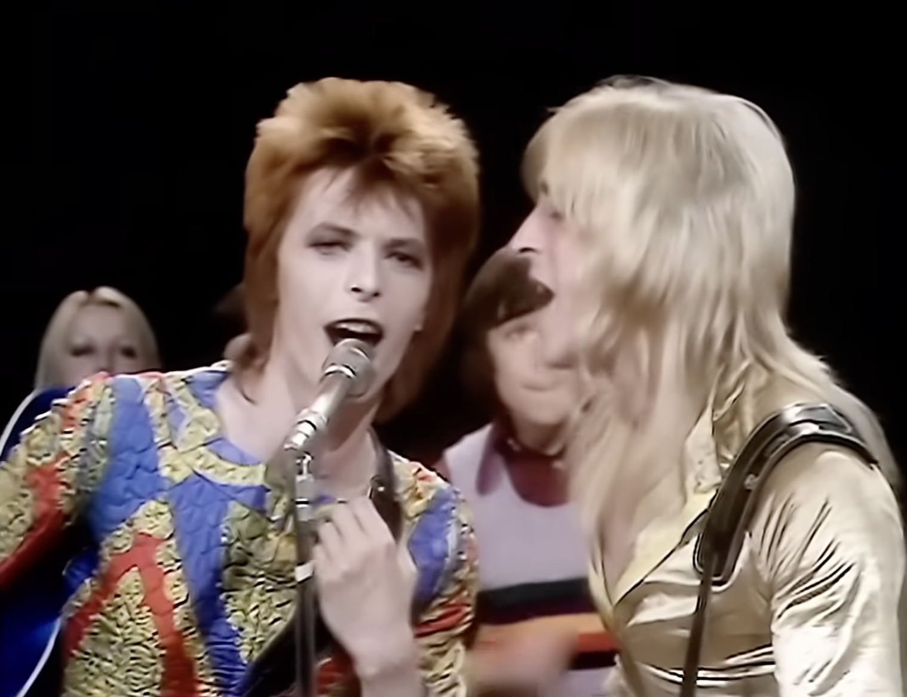
Just like all of the masculine rock scenes of the 60s that glam was responding to, I don’t think that punk or hardcore are afraid of androgyny as much as they’re afraid of femininity. Masculine-coded subcultures like these are often tentatively receptive to women and queer people as long as they agree to uphold the scene’s masculine values. What really scares them is feminine spectacle. They’re terrified that the vapidity of girls and effeminate gay men might rub off on them if they get too close. So, their truth is the black t-shirt, the faded jeans, the old boots.
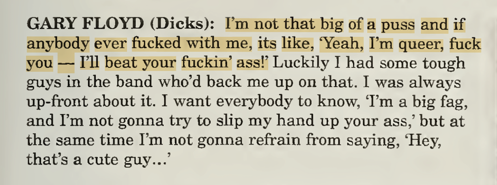
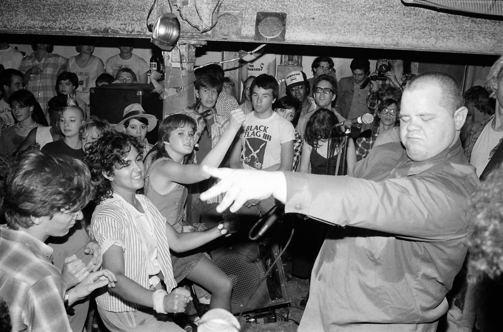
Despite Gary's standard aggro hardcore attitude in this quote, it is worth noting that their shows had visibly more women + queer people than all of the straight-male bands
Maybe it’s just that women and queer people tend to be more aware of the way that gender is itself a spectacular performance, maintained through the consumption of commodities, pushing up against you whether you like it or not. The whole thing is spectacle you can’t really escape—only bend to your advantage.
Ultimately I want to point out here that third-wave emo and glam rock both represent clashes between feminine aesthetics and rock music’s inherent masculine biases. Glam rock was a response to a 60s “realism” that revolved around serious men sporting street clothes onstage, and emo was a response to the same kind of masculine realness in early 2000s rock culture. Here, we can certainly think about first and second-wave emo, but we should also think about everything else that was happening during this era: like nu metal and butt rock. These feminized and androgynous rock movements sought to challenge the status quo by celebrating femininity and queer tastes in places where these things weren’t taken seriously, or were brushed off as “inauthentic.” It’s no wonder that bands like My Chemical Romance and Fall Out Boy attracted disproportionately feminine and queer audiences, because these were the bands celebrating queer and feminine tastes openly. From my own personal experience, I can confirm that it is a lot more exciting to love a band as a teenage girl when you don’t feel like the band hates you for being a teenage girl.
By placing emo in conversation with glam rock, we can see that the negative response to third-wave emo is not an isolated incident in the history of rock music, but part of a much larger pattern where feminine aesthetics and values repeatedly threaten the credibility of rock subcultures.
1 “The History of Color TV in the UK,” Science and Media Museum, accessed May 1, 2026, https://www.scienceandmediamuseum.org.uk/objects-and-stories/history-colour-tv-uk.
2 Philip Auslander, Performing Glam Rock: Gender and theatricality in popular music (University of Michigan Press, 2006): 6.
3 Guy Debord, The Society of the Spectacle, trans. Ken Knabb (Bureau of Public Secrets, 2014): 14.
4 Jon Stratton, Spectacle, Fashion and the Dancing Experience in Britain, 1960–1990 (Palgrave Macmillan, 2022): 124-125.
5 Laura Mulvey, “Visual Pleasure and Narrative Cinema,” Screen 16, no. 3 (Autumn 1975): 62.